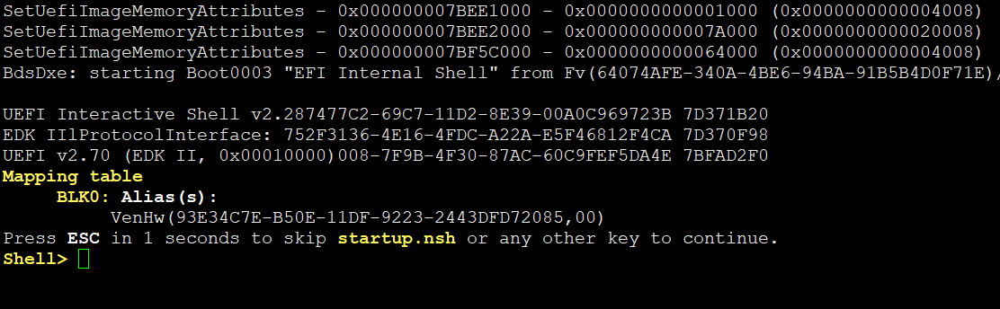
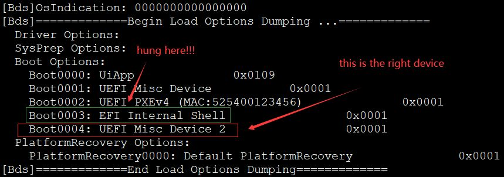
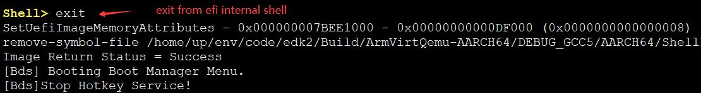
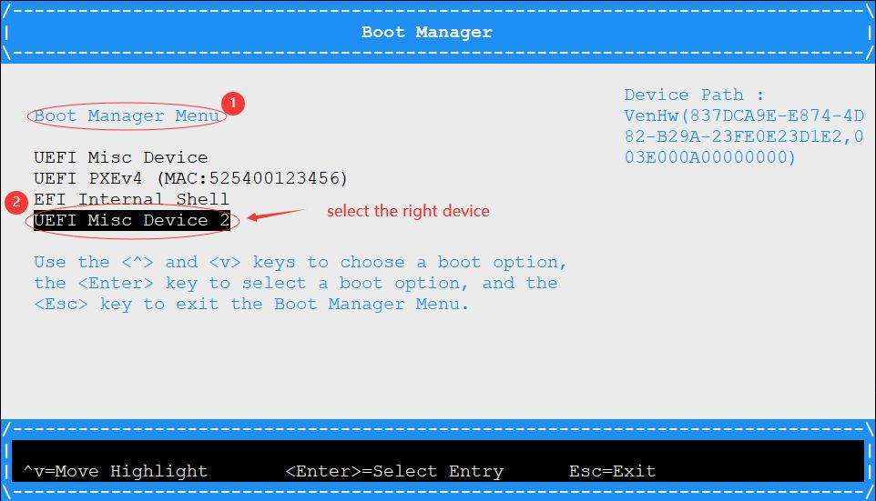
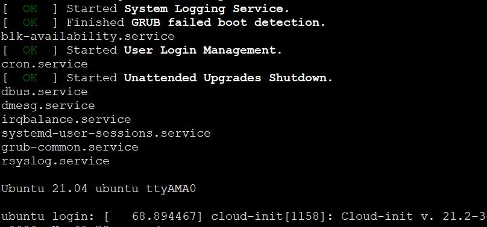

Launch ARM64 VM on RaspberryPi4B

Create and test flash images
create images
repalce /usr/share/qemu-efi/QEMU_EFI.fd with your own built file1
2
3dd if=/dev/zero of=flash0.img bs=1M count=64
dd if=/usr/share/qemu-efi/QEMU_EFI.fd of=flash0.img conv=notrunc
dd if=/dev/zero of=flash1.img bs=1M count=64test if your flash work well
1
./build/qemu-system-aarch64 -enable-kvm -M virt -m 1024 -cpu host -smp 2 -pflash /home/up/env/code/images/flash0.img -pflash /home/up/env/code/images/flash1.img -nographic

Download and boot from cloud image
download imgage
1
wget http://cloud-images.ubuntu.com/hirsute/current/hirsute-server-cloudimg-arm64.img
query image information
1
2
3
4
5
6
7
8
9
10$ ./build/qemu-img info ../images/hirsute-server-cloudimg-arm64.img
image: ../images/hirsute-server-cloudimg-arm64.img
file format: qcow2
virtual size: 2.2 GiB (2361393152 bytes)
disk size: 528 MiB
cluster_size: 65536
Format specific information:
compat: 0.10
compression type: zlib
refcount bits: 16boot from image
1
./build/qemu-system-aarch64 -enable-kvm -M virt -m 1024 -cpu host -smp 2 -pflash /home/up/env/code/images/flash0.img -pflash /home/up/env/code/images/flash1.img -nographic -drive if=none,file=/home/up/env/code/images/hirsute-server-cloudimg-arm64.img,id=hd0 -device virtio-blk-device,drive=hd0
CANNOT BOOT HERE!!! shoud debug in edk2 function BdsEntry().
boot hung
exit shell
select device

Boot successful!

Config image with cloud-init
- cloud-localds
1
sudo apt install genisoimage
- generate cloud-init config file
1
2$ { echo instance-id: iid-local01; echo local-hostname: cloudimg; } > meta-data
printf "#cloud-config\npassword: passw0rd\nchpasswd: { expire: False }\nssh_pwauth: True\n" > user-data - set your own passwd
1
2
3
4$ openssl passwd -6
Password:
Verifying - Password:
$6$he0icVn3e98gzInO$jv/jT5HQwSeXwQOJ8rLOcPOBekJmsIaQCEBmAT2RZYD8Tv6N/NMGvMHvuBEc98yCjOeVbGvtvaDfjub/bsyfC/1
2
3
4
5$ cat user-data
#cloud-config
password: "$6$he0icVn3e98gzInO$jv/jT5HQwSeXwQOJ8rLOcPOBekJmsIaQCEBmAT2RZYD8Tv6N/NMGvMHvuBEc98yCjOeVbGvtvaDfjub/bsyfC/"
chpasswd: { expire: False }
ssh_pwauth: True - generate config iso
1
genisoimage -output seed.iso -volid cidata -joliet -rock user-data meta-data
- launch vm with seed.iso
1
./build/qemu-system-aarch64 -enable-kvm -M virt -m 1024 -cpu host -smp 2 -pflash /home/up/env/code/images/flash0.img -pflash /home/up/env/code/images/flash1.img -nographic -drive if=none,file=/home/up/env/code/images/hirsute-server-cloudimg-arm64.img,id=hd0 -device virtio-blk-device,drive=hd0 -drive file=/home/up/env/code/images/seed.iso,if=virtio